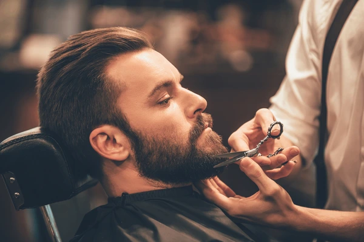

Miért fontos a jó férfi fodrász?
Sokan alábecsülik, mennyit számít egy igazán jó férfi fodrász. Nem csak a hajról van szó – hanem arról, hogy hogyan nézel ki reggel a tükörben, hogyan érzed magad egy fontos megbeszélésen, vagy épp egy randira menet.
Egy profi férfi fodrász nem csak vág. Figyeli az arcformádat, a haj növekedési irányát, a sűrűséget, és azt is, hogy a végeredmény két látogatás között is rendezett maradjon.
A legjobb budapesti férfi fodrászatoknál ma már nem csak fade hajvágást vagy kontúrvágást kapsz – hanem egy teljes megjelenés-konzultációt, ahol a frizura és a szakáll együtt kerül kialakításra. Ez az, amit egy átlagos fodrász nem tud nyújtani.
- Arcformához igazított férfi frizura és szakáll
- Egységes, összehangolt végeredmény
- Kevesebb napi igazítás
- Természetes, mégis erős összhatás
Legnépszerűbb férfi hajtrendek 2026-ban
A férfi frizurák világa sokat változott az elmúlt években. Ma már nem elég egy sima gépi vágás – az emberek tudják, mit akarnak, és pontosan azt is kérik. Nézzük, melyek a legtöbbet keresett férfi hajtrendek most.

Mullet
A 80-as évek klasszikusa teljesen megújult. Már nem a drasztikus különbségről szól, hanem egy lágyabb átmenetről: oldalt rövidebb, hátul pedig karakteresen hosszabb, de igényesen vágott.

Crop
Ez a frizura évek óta trónol, és 2026-ban is a legnépszerűbb választás. Az oldalt rövidre nyírt (gyakran skin fade-del kombinált) részekhez egy tépett, előrefésült felső rész társul.

Fade
Skin fade, taper fade, high fade – mindegyik más hatást ad, de a lényeg ugyanaz: tiszta átmenet, ami azonnal emeli az összképet. Időtálló alapja szinte bármilyen frizurának.
Buzz cut
A legtisztább és legmaszkulinabb trend. Idén nem csak egyszerűen rövidre nyírják a hajat, hanem precíz, bőrig hatoló átmenettel (skin fade) és éles kontúrokkal teszik modernné.
Szakállápolás: a részlet, ami teljesebbé teszi a megjelenést
Sokan elhanyagolják a szakállt, pedig ez az egyik legnagyobb hiba, amit egy férfi elkövethet a megjelenésével kapcsolatban. Egy rendezett, jól formázott szakáll szinte azonnal komolyabbá, tudatosabbá teszi az összképet – legyen szó rövidebb borostáról vagy hosszabb szakállról.
A professzionális szakállformázás nem csak a hossz beállításáról szól. A nyakvonal, a pofaszakáll kontúrja, a szakáll és a haj aránya – ezek finomhangolása teszi igazán igényessé az eredményt.
- Rendszeres szakálligazítás megőrzi a tiszta, rendezett formát
- Szakállolaj és minőségi ápolószerek puhítják és rendezik a szőrzetet
- A hajjal harmonizáló szakáll prémiumabb, egységesebb végeredményt ad
- Még a rövid borostánál is sokat számít a precíz kontúrvágás

Hogyan válassz férfi fodrászatot Budapesten?
Budapest tele van férfi fodrászatokkal – de köztük óriási a különbség. Nem elég, hogy valaki olcsó legyen vagy közel legyen hozzád. Az igazán jó férfi fodrászatot az különbözteti meg, hogy oda visszamész, mert minden alkalommal ugyanolyan jó eredményt kapsz.
Mire figyelj, amikor férfi fodrászatot keresel? Nézd meg a referenciáikat – Instagram, Google vélemények, személyes ajánlás. Egy profi férfi fodrászat nem fél megmutatni a munkáit. Ha az oldalukon csak stockfotók vannak, az már önmagában árulkodó.
- Valódi, saját referenciafotók és Google értékelések
- Konzultáció vágás előtt – nem rögtön a gép
- Rendezett, letisztult szalon környezet
- Következetes minőség minden látogatásnál
Milyen gyakran érdemes visszajárni a fodrászhoz?
Ez az egyik leggyakrabban feltett kérdés – és az őszinte válasz az, hogy attól függ, milyen frizurát hordasz. Egy fade gyorsan megnő, és már 2-3 hét után látszik, hogy "kinőtted". Egy hosszabb stílusnál van több mozgástér, de a rendszeresség ott is sokat számít.
- Fade és skin fade hajvágás: 2–3 hetente ajánlott
- Klasszikus rövidebb férfi frizura: 3–5 hetente
- Szakálligazítás és kontúrvágás: 1–3 hetente
A legjobb megoldás: foglalj előre visszatérő időpontot a fodrászodhoz. Így sosem csúszol el, és mindig friss marad a megjelenésed – nem csak akkor, amikor már muszáj.

Otthoni hajápolás: mitől marad jó a frizura két látogatás között?
A fodrászatnál töltött 45 perc csak az alap – a többi rajtad múlik. Az otthoni hajápolás nem kell, hogy bonyolult legyen, de néhány alapdolog betartásával sokat megőrizhetsz abból a friss, rendezett hatásból, amit a vágás után éreztél.
- Használj hajtípusodhoz való sampont – a "2 az 1-ben" nem barátod
- Hajformázóból elég kevés: mogyorónyi wax vagy pomádé általában bőven elég
- Szárítás közben irányítsd a hajat – ez adja a formát, nem a gél
- Ne várd meg, amíg teljesen kinő – a rendszeres vágás könnyebb, mint a helyreállítás
Készen állsz egy igazán jó hajvágásra?
Ha eddig még nem találtad meg a saját férfi fodrászatodat Budapesten – most itt az ideje. Egy jó hajvágás, precíz szakálligazítás és egy fodrász, aki tényleg odafigyel: ennyi kell ahhoz, hogy másnap jobban érezd magad a bőrödben. Foglalj időpontot, és tapasztald meg te is a különbséget.